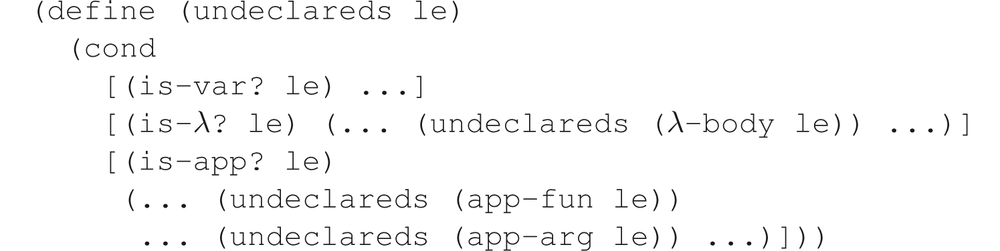
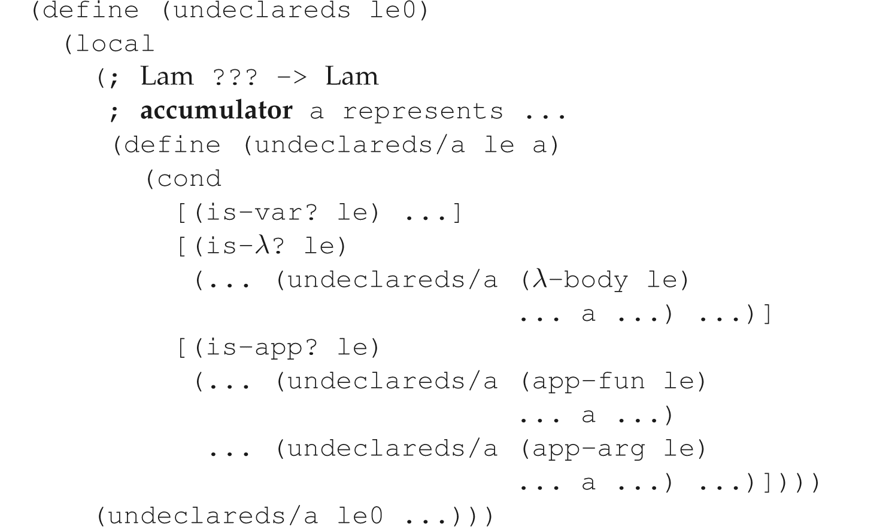
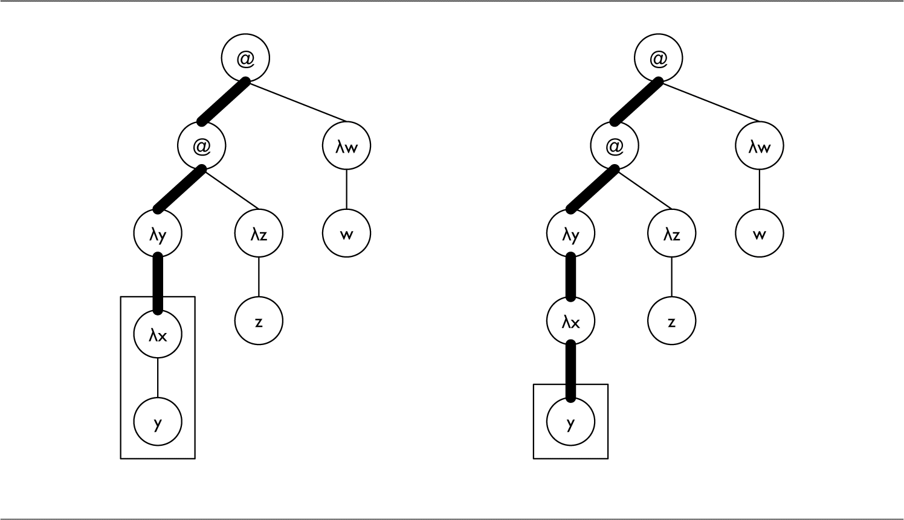
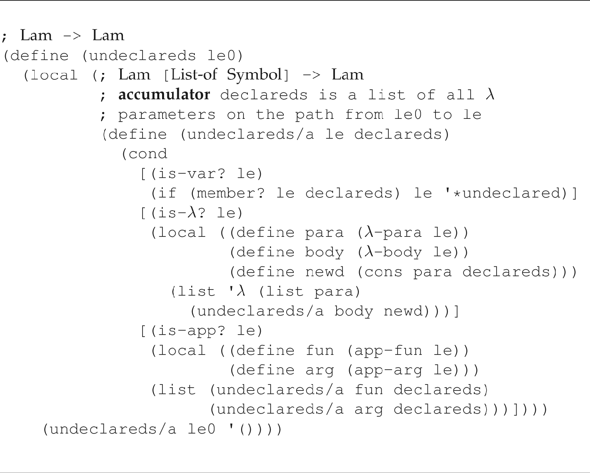
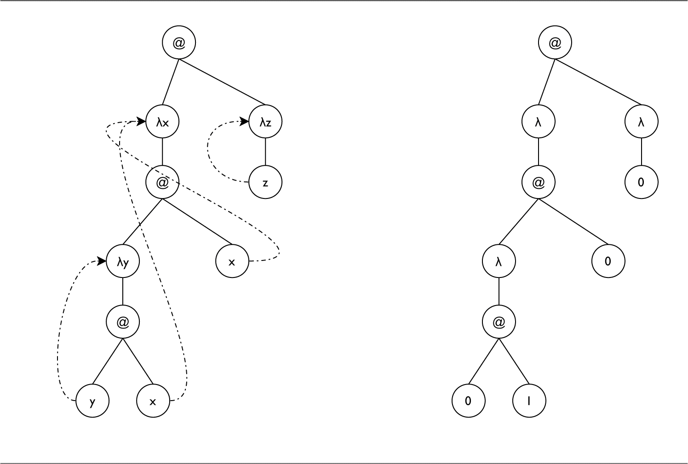

33.1 Accumulators and Trees
When you ask DrRacket to run an ISL+ program, it translates the program to commands for your specific computer. This process is called compilation, and the part of DrRacket that performs the task is called a compiler. Before the compiler translates the ISL+ program, it checks that every variable is declared via a define, a define-struct, or a lambda.
Stop! Enter x, (lambda (y) x), and (x 5) as complete ISL+ programs into DrRacket and ask it to run each. What do you expect to see?
Let’s phrase this idea as a sample problem:
Sample Problem You have been hired to re-create a part of the ISL+ compiler. Specifically, your task deals with the following language fragment, specified in the so-called grammar notation that many programming language manuals use:
We use the Greek letter λ instead of lambda to signal that this exercise deals with ISL+ as an object of study, not just a programming language.
Remember from intermezzo 1 that you can read the grammar aloud replacing = with “is one of” and | with “or.”
Recall that λ expressions are functions without names. They bind their parameter in their body. Conversely, a variable occurrence is declared by a surrounding λ that specifies the same name as a parameter. You may wish to revisit intermezzo 3 because it deals with the same issue from the perspective of a programmer. Look for the terms “binding occurrence,” “bound occurrence,” and “free.”
Develop a data representation for the above language fragment; use symbols to represent variables. Then design a function that replaces all undeclared variables with '*undeclared.
This problem is representative of many steps in the translation process and, at the same time, is a great case study for accumulator-style functions.
Before we dive into the problem, let’s look at some examples in this mini-language, recalling what we know about lambda:
• (λ (x) x) is the function that returns whatever it is given, also known as the identity function;
• (λ (x) y) looks like a function that returns y whenever it is given an argument, except that y isn’t declared;
• (λ (y) (λ (x) y)) is a function that, when given some value v, produces a function that always returns v;
• ((λ (x) x) (λ (x) x)) applies the identity function to itself;
• ((λ (x) (x x)) (λ (x) (x x))) is a short infinite loop; and
• (((λ (y) (λ (x) y)) (λ (z) z)) (λ (w) w)) is a complex expression that is best run in ISL+ to find out whether it terminates.
Indeed, you can run all of the above ISL+ expressions in DrRacket to confirm what is written about them.
Exercise 511. Explain the scope of each binding occurrence in the above examples. Draw arrows from the bound to the binding occurrences. 
Developing a data representation for the language is easy, especially because its description uses a grammar notation. Here is one possibility:
; A Lam is one of:
; -- a Symbol
; -- (list 'λ (list Symbol) Lam)
; -- (list Lam Lam)
Because of quote, this data representation makes it easy to create data representations for expressions in our subset of ISL+:
(define ex1 '(λ (x) x))
(define ex2 '(λ (x) y))
(define ex3 '(λ (y) (λ (x) y)))
(define ex4 '((λ (x) (x x)) (λ (x) (x x))))
These four data examples are representations of some of the above expressions. Stop! Create data representations for the remaining examples.
Exercise 512. Define is-var?, is-λ?, and is-app?, that is, predicates that distinguish variables from λ expressions and applications.
Also define
• λ-para, which extracts the parameter from a λ expression;
• λ-body, which extracts the body from a λ expression;
• app-fun, which extracts the function from an application; and
• app-arg, which extracts the argument from an application.
With these predicates and selectors, you basically can act as if you had defined a structure-oriented data representation.
Design declareds, which produces the list of all symbols used as λ parameters in a λ term. Don’t worry about duplicate symbols.
Exercise 513. Develop a data representation for the same subset of ISL+ that uses structures instead of lists. Also provide data representations for ex1, ex2, and ex3 following your data definition.
We follow the structural design recipe, and here is the product of steps two and three:
; Lam -> Lam
; replaces all symbols s in le with '*undeclared
; if they do not occur within the body of a λ
; expression whose parameter is s
(check-expect (undeclareds ex1) ex1)
(check-expect (undeclareds ex2) '(λ (x) *undeclared))
(check-expect (undeclareds ex3) ex3)
(check-expect (undeclareds ex4) ex4)
(define (undeclareds le0)
le0)
Note how we expect undeclareds to process ex4 even though the expression loops forever when run; compilers don’t run programs, they read them and create others.
A close look at the purpose statement directly suggests that the function needs an accumulator. This becomes even clearer when we inspect the template for undeclareds:

When undeclareds recurs on the body of (the representation of) a λ expression, it forgets (λ-para le), the declared variable.
So, let’s start with an accumulator-style template:

In this context, we can now formulate an accumulator invariant:
a represents the list of λ parameters encountered on the path from the top of le0 to the top of le.
For example, if le0 is
and le is the highlighted subtree, then a contains y. The left side of figure 186 presents a graphical illustration of the same example. It shows a Lam expression as an upside-down tree; that is, the root is at the top. A @ node represents an application with two descendants; the other nodes are self-explanatory. In this tree diagram, the bold path leads from le0 to le through a single variable declaration.

Figure 186: Lam terms as trees
Similarly, if we pick a different subtree of the same piece of data,
we get an accumulator that contains both 'y and 'x. The right side of figure 186 makes this point again. Here the bold path leads through two 'λ nodes to the boxed subtree, and the accumulator is the list of declared variables along the bold path.
Now that we have settled on the data representation of the accumulator and its invariant, we can resolve the remaining design questions:
• We pick an initial accumulator value of '().
• We use cons to add (λ-para le) to a.
• We exploit the accumulator for the clause where undeclareds/a deals with a variable. Specifically, the function uses the accumulator to check whether the variable is in the scope of a declaration.
Figure 187 shows how to translate these ideas into a complete function definition. Note the name declareds for the accumulator; it brings across the key idea behind the accumulator invariant, helping the programmer understand the definition. The base case uses member? from ISL+ to determine whether the variable le is in declareds and, if not, replaces it with '*undeclared. The second cond clause uses a local to introduce the extended accumulator newd. Because para is also used to rebuild the expression, it has its own local definition. Finally, the last clause concerns function applications, which do not declare variables and do not use any directly. As a result, it is by far the simplest of the three clauses.

Figure 187: Finding undeclared variables
Exercise 514. Make up an ISL+ expression in which x occurs both free and bound. Formulate it as an element of Lam. Does undeclareds work properly on your expression?
Exercise 515. Consider the following expression:
(λ (*undeclared) ((λ (x) (x *undeclared)) y))
Yes, it uses *undeclared as a variable. Represent it in Lam and check what undeclareds produces for this expression.
Modify undeclareds so that it replaces a free occurrence of 'x with
(list '*undeclared 'x)
and a bound one 'y with
(list '*declared 'y)
Doing so unambiguously identifies problem spots, which a program development environment such as DrRacket can use to highlight errors.
Note The trick of replacing a variable occurrence with the representation of an application feels awkward. If you dislike it, consider synthesizing the symbols '*undeclared:x and 'declared:y instead.
Exercise 516. Redesign the undeclareds function for the structure-based data representation from exercise 513.
Exercise 517. Design static-distance. The function replaces all occurrences of variables with a natural number that represents how far away the declaring λ is. Figure 188 illustrates the idea for the term

Figure 188: Static distances
'((λ (x) ((λ (y) (y x)) x)) (λ (z) z))
in graphical form. It includes dotted arrows that point from variable occurrences to the corresponding variable declarations. On the right, the figure shows a tree of the same shape, though without the arrows. The 'λ nodes come without names, and variable occurrences have been replaced by natural numbers that specify which 'λ declares the variable. Each natural number n says that the binding occurrence is n steps upward—toward the root of the Lam tree. A value of 0 denotes the first 'λ on the path to the root, 1 the second one, and so on.
Hint The undeclareds accumulator of undeclareds/a is a list of all parameters on path from le to le0 in reverse order—the last one seen is first on the list.